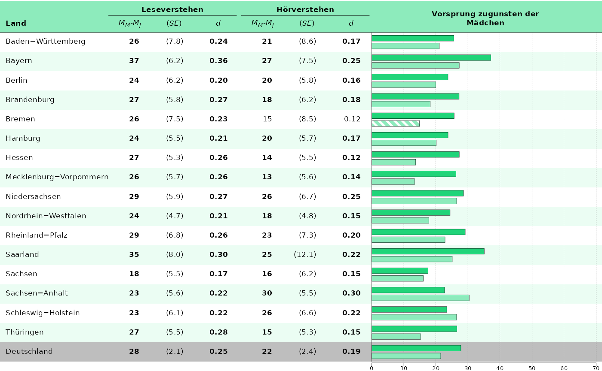
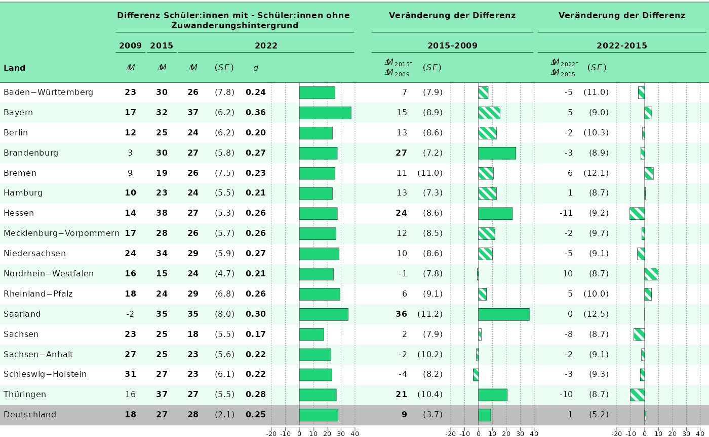

Tableplots
tableplots.RmdThis vignette shows you how to plot tableplots from
eatRep data. The workflow is optimized for
Bildungstrend-graphs, but can be expanded for plotting other
eatRep data as well.
Geschlechterkapitel
Abbildung 6.5
First we prepare the data:
Now, we only want to plot the comparison of männlich vs. weiblich. The direction is always the same, we can look that up in the plain data, therefore it doesn’t matter which one we filter:
gender_prepped_sub <- subset(gender_prepped, subgroup_var == "maennlich")
gender_prepped <- gender_prepped_sub[order(gender_prepped_sub$state_var), ]
gender_prepped$y_axis <- 1:nrow(gender_prepped)
gender_prepped$state_var <- process_bundesland(gender_prepped$state_var, linebreak = FALSE)The tables need some more work, because they need to be connected with the barplot, but only have half the rows. Therefore we need to build separate variables for each table part, with the respective rows of the domain not plotted in the table half set to empty strings. Because we want to plot both competence areas next to each other, we have to do some minor data wrangling first:
gender_prepped_lesen <- gender_prepped
gender_prepped_lesen[gender_prepped_lesen$kb == "hoeren", !colnames(gender_prepped) %in% c("y_axis", "kb")] <- NA
gender_prepped_hoeren <- gender_prepped
gender_prepped_hoeren[gender_prepped_hoeren$kb == "lesen", !colnames(gender_prepped) %in% c("y_axis", "kb")] <- NA
gender_prepped_lh <- merge(gender_prepped_lesen, gender_prepped_hoeren, by = c("y_axis", "kb"), suffixes = c("_lesen", "_hören"))
gender_prepped_lh_final <- merge(
gender_prepped_lh,
gender_prepped[, c(
"y_axis",
"est_mean_comp_groupDiff_sameFacet_weiblichSubgroup_2022",
"sig_mean_comp_groupDiff_sameFacet_weiblichSubgroup_2022"
)]
)
gender_prepped_lh_final <- gender_prepped_lh_final[order(gender_prepped_lh_final$y_axis), ]Now we can plot the table like usual, with one exception: I can nudge the table contents a bit downwards, so they also fill the empty row.
tableplot_6.5 <- plot_tablebarplot(
dat = gender_prepped_lh_final,
bar_est = "est_mean_comp_groupDiff_sameFacet_weiblichSubgroup_2022",
bar_fill = "kb",
bar_sig = "sig_mean_comp_groupDiff_sameFacet_weiblichSubgroup_2022",
columns_table = list(
"state_var_lesen",
"est_mean_comp_groupDiff_sameFacet_weiblichSubgroup_2022_lesen",
"se_mean_comp_groupDiff_sameFacet_weiblichSubgroup_2022_lesen",
"es_mean_comp_groupDiff_sameFacet_weiblichSubgroup_2022_lesen",
"est_mean_comp_groupDiff_sameFacet_weiblichSubgroup_2022_hören",
"se_mean_comp_groupDiff_sameFacet_weiblichSubgroup_2022_hören",
"es_mean_comp_groupDiff_sameFacet_weiblichSubgroup_2022_hören"
),
columns_table_sig_bold = list(NULL, "sig_mean_comp_groupDiff_sameFacet_weiblichSubgroup_2022_lesen", NULL, "sig_mean_comp_groupDiff_sameFacet_weiblichSubgroup_2022_lesen", "sig_mean_comp_groupDiff_sameFacet_weiblichSubgroup_2022_hören", NULL, "sig_mean_comp_groupDiff_sameFacet_weiblichSubgroup_2022_hören"),
columns_table_sig_superscript = list(
NULL, "sig_mean_comp_crossDiff_of_groupDiff_totalFacet_weiblichSubgroup_2022_lesen",
NULL, "sig_mean_comp_crossDiff_of_groupDiff_totalFacet_weiblichSubgroup_2022_lesen", "sig_mean_comp_crossDiff_of_groupDiff_totalFacet_weiblichSubgroup_2022_hören", NULL, "sig_mean_comp_crossDiff_of_groupDiff_totalFacet_weiblichSubgroup_2022_hören"
),
columns_round = list(NULL, 0, 1, 2, 0, 1, 2),
columns_table_se = list(NULL, NULL, "se_mean_comp_groupDiff_sameFacet_weiblichSubgroup_2022_lesen", NULL, NULL, "se_mean_comp_groupDiff_sameFacet_weiblichSubgroup_2022_hören", NULL),
headers = list("**Land**", "*M<sub>M</sub>-M<sub>J</sub>*", "(*SE*)", "*d*", "*M<sub>M</sub>-M<sub>J</sub>*", "(*SE*)", "*d*", "**Vorsprung zugunsten der<br>Mädchen**"),
column_spanners = list("**Leseverstehen**" = c(2, 4), "**Hörverstehen**" = c(5, 7)),
y_axis = "y_axis",
plot_settings = plotsettings_tablebarplot(
default_list = abb_6.5
)
)Finally we can save the plot:
save_plot(tableplot_6.5, filename = "C:/Users/hafiznij/Downloads/abb6.5.pdf", width = 160, height = 90, scaling = 1)
tableplot_6.5
Abbildung 6.6
First the data has to be prepared:
gender_prepped_mean_sd <- lapply(trend_gender,
prep_tablebarplot,
subgroup_var = "Kgender",
par = c("mean", "sd")
)
## Let's focus on:
gender_lesen <- gender_prepped_mean_sd[[1]]Afterwards, we have to bring it in the format we want to plot it in:
gender_lesen <- subset(gender_lesen, subgroup_var %in% c("maennlich", "weiblich"))
## Mädchen sollen nach oben
gender_lesen <- gender_lesen[order(gender_lesen$subgroup_var, decreasing = TRUE), ]
gender_lesen <- gender_lesen[order(gender_lesen$state_var), ]
gender_lesen$state_var[duplicated(gender_lesen$state_var)] <- " "
gender_lesen$state_var <- process_bundesland(gender_lesen$state_var, linebreak = TRUE)
gender_lesen$subgroup_var <- gsub("maennlich", "Jungen", gender_lesen$subgroup_var)
gender_lesen$subgroup_var <- gsub("weiblich", "Mädchen", gender_lesen$subgroup_var)
gender_lesen$empty <- ""We will have to plot multiple plots and combine them. To do that, we will have to set the column widths, so they are identical over the different plots:
column_widths_stand <- standardize_column_width(
column_widths = list(
p1 = c(0.085, 0.05, rep(0.035, 6), 0.015, rep(0.035, 3), NA),
p2 = c(rep(0.035, 3), NA)
),
plot_ranges = c(142, 142) # Ranges of the x-axes of both plots set in 'axis_x_lims'.
)We can just use this object in the plot-settings to adjust the column widths.
p_1 <- plot_tablebarplot(
dat = gender_lesen,
bar_est = "est_mean_comp_trend_sameFacet_sameSubgroup_2009_2015",
bar_label = NULL,
bar_sig = "sig_mean_comp_trend_sameFacet_sameSubgroup_2009_2015",
bar_fill = "subgroup_var",
column_spanners = list(
"**2009**" = c(3, 4),
"**2015**" = c(5, 6),
"**2022**" = c(7, 8),
"**Differenz 2015-2009**" = c(10, 13)
),
columns_table_se = list(NULL, NULL, NULL, NULL, NULL, NULL, NULL, NULL, NULL, NULL, "se_mean_comp_trend_sameFacet_sameSubgroup_2009_2015", NULL),
headers = list("**Land**", " ", "*M*", "*SD*", "*M*", "*SD*", "*M*", "*SD*", "", "*M<sub>2015</sub>-<br>M<sub>2009</sub>* ", "*(SE)*", "*d*", " "),
columns_table = c("state_var", "subgroup_var", "est_mean_comp_none_2009", "est_sd_comp_none_2009", "est_mean_comp_none_2015", "est_sd_comp_none_2015", "est_mean_comp_none_2022", "est_sd_comp_none_2022", "empty", "est_mean_comp_trend_sameFacet_sameSubgroup_2009_2015", "se_mean_comp_trend_sameFacet_sameSubgroup_2009_2015", "es_mean_comp_trend_sameFacet_sameSubgroup_2009_2015"),
columns_table_sig_bold = list(
NULL, NULL, "sig_mean_comp_none_2009",
NULL, "sig_mean_comp_none_2015", NULL, "sig_mean_comp_none_2022", NULL, NULL, "sig_mean_comp_trend_sameFacet_sameSubgroup_2009_2015", NULL, "sig_mean_comp_trend_sameFacet_sameSubgroup_2009_2015"
),
columns_table_sig_superscript = list(NULL, NULL, NULL, NULL, NULL, NULL, NULL, NULL, NULL, "sig_mean_comp_trend_crossDiff_totalFacet_sameSubgroup_2009_2015", NULL, NULL),
y_axis = "y_axis",
columns_round = c(rep(0, 11), 2),
plot_settings = plotsettings_tablebarplot(
bar_pattern_spacing = 0.0184, ## We calculated this below in standardize_pattern_spacing()
columns_alignment = c(0, 0, rep(2, 10)),
columns_width = column_widths_stand$p1, ## This is the column-width object we set above
columns_nudge_y = c(-0.5, rep(0, 11)),
headers_alignment = c(0, 0, rep(0.5, 7), 0, 0.5, 0.5, 0),
headers_nudge_x = c(rep(0, 9), 2, rep(0, 3)),
default_list = abb_6.6
)
)
p_2 <- plot_tablebarplot(
dat = gender_lesen,
bar_est = "est_mean_comp_trend_sameFacet_sameSubgroup_2015_2022",
bar_label = NULL,
bar_sig = "sig_mean_comp_trend_sameFacet_sameSubgroup_2015_2022",
bar_fill = "subgroup_var",
column_spanners = list(
"**Differenz 2022-2015**" = c(1, 4)
),
headers = list(
"*M<sub>2022</sub>-<br>M<sub>2015</sub>* ",
"*(SE)*",
"*d*",
" "
),
columns_table = c(
"est_mean_comp_trend_sameFacet_sameSubgroup_2015_2022",
"se_mean_comp_trend_sameFacet_sameSubgroup_2015_2022",
"es_mean_comp_trend_sameFacet_sameSubgroup_2015_2022"
),
columns_table_se = list(NULL, "se_mean_comp_trend_sameFacet_sameSubgroup_2015_2022", NULL),
columns_table_sig_bold = list("sig_mean_comp_trend_sameFacet_sameSubgroup_2015_2022", NULL, "sig_mean_comp_trend_sameFacet_sameSubgroup_2015_2022"),
columns_table_sig_superscript = list("sig_mean_comp_trend_crossDiff_totalFacet_sameSubgroup_2015_2022", NULL, NULL),
y_axis = "y_axis",
columns_round = c(0, 0, 2),
plot_settings = plotsettings_tablebarplot(
bar_pattern_spacing = 0.0316, ## We calculated this below in standardize_pattern_spacing()
columns_alignment = c(0.5, 2, 2),
columns_width = column_widths_stand$p2, ## This is the column-width object we set above
headers_nudge_x = c(2, 0, 0, 0),
headers_alignment = c(0, 0.5, 0.5, 0),
default_list = abb_6.6
)
)It might be necessary to standardize the pattern spacing over the plots:
bar_pattern_spacing_stand <- standardize_pattern_spacing(list(p_1, p_2), pattern_spacing = 0.05)## Next Step: Update the bar_pattern_spacing values in your respective plots with the output values.
bar_pattern_spacing_stand## [1] 0.0159 0.0341These values have to be set in the plot-settings above.
Now we can combine the plots:
tableplot_6.6 <- combine_plots(list(p_1, p_2))And save the result:
save_plot(tableplot_6.6, filename = "C:/Users/hafiznij/Downloads/abb_6.6.pdf", width = 235, height = 130, scaling = 1)
Zuwanderungskapitel
Currently use the gender_trend data.
gender_prepped_2 <- gender_prepped[gender_prepped$kb == "lesen", ]
gender_prepped_2$empty <- "" ## Needes as a empty space between column spanners
gender_prepped_2$state_var <- process_bundesland(gender_prepped_2$state_var, linebreak = FALSE)
column_widths_stand <- standardize_column_width(
column_widths = list(
p1 = c(0.16, rep(0.045, 5), NA),
p2 = c(0.015, 0.07, 0.045, NA),
p3 = c(0.07, 0.045, NA)
),
plot_ranges = c(60, 60, 65) # Range of the x-axes of both plots set in 'axis_x_lims'.
)
p_1 <- plot_tablebarplot(
dat = gender_prepped_2,
bar_est = "est_mean_comp_groupDiff_sameFacet_weiblichSubgroup_2022",
bar_sig = "sig_mean_comp_groupDiff_sameFacet_weiblichSubgroup_2022",
column_spanners = list(
"**2009**" = c(2),
"**2015**" = c(3),
"**2022**" = c(4, 7)
),
column_spanners_2 = list(
"**Differenz Schüler:innen mit - Schüler:innen ohne <br> Zuwanderungshintergrund**" = c(2, 7)
),
columns_table_se = list(NULL, NULL, NULL, NULL, "se_mean_comp_groupDiff_sameFacet_weiblichSubgroup_2022", NULL),
headers = list(
"bold(Land)",
"italic(Delta * M)",
"italic(Delta * M)",
"italic(Delta * M)",
"italic((SE))",
"italic(d)",
" "
),
columns_table = c(
"state_var",
"est_mean_comp_groupDiff_sameFacet_weiblichSubgroup_2009",
"est_mean_comp_groupDiff_sameFacet_weiblichSubgroup_2015",
"est_mean_comp_groupDiff_sameFacet_weiblichSubgroup_2022",
"se_mean_comp_groupDiff_sameFacet_weiblichSubgroup_2022",
"es_mean_comp_groupDiff_sameFacet_weiblichSubgroup_2022"
),
columns_table_sig_bold = list(
NULL,
"sig_mean_comp_groupDiff_sameFacet_weiblichSubgroup_2009",
"sig_mean_comp_groupDiff_sameFacet_weiblichSubgroup_2015",
"sig_mean_comp_groupDiff_sameFacet_weiblichSubgroup_2022",
NULL,
"sig_mean_comp_groupDiff_sameFacet_weiblichSubgroup_2022"
),
y_axis = "y_axis",
columns_round = c(0, 0, 0, 0, 0, 2),
plot_settings = plotsettings_tablebarplot(
bar_pattern_spacing = 0.0274,
columns_alignment = c(0, 0.5, 0.5, 0.5, 0.5, 0.5),
columns_width = column_widths_stand$p1,
default_list = abb_8.4
)
)
p_2 <- plot_tablebarplot(
dat = gender_prepped_2,
bar_est = "est_mean_comp_trend_groupDiff_sameFacet_weiblichSubgroup_2009_2015",
bar_sig = "sig_mean_comp_trend_groupDiff_sameFacet_weiblichSubgroup_2009_2015",
column_spanners = list(
"**2015-2009**" = c(2, 4)
),
column_spanners_2 = list(
"**Veränderung der Differenz<br>**" = c(2, 4)
),
columns_table_se = list(NULL, NULL, "se_mean_comp_trend_groupDiff_sameFacet_weiblichSubgroup_2009_2015"),
headers = list(
" ",
"atop(paste(italic(Delta * M[2015]), \"\U2212\"),
italic(Delta * M[2009]))",
# "*\u0394 M*",
"italic((SE))",
" "
),
columns_table = c(
"empty",
"est_mean_comp_trend_groupDiff_sameFacet_weiblichSubgroup_2009_2015",
"se_mean_comp_trend_groupDiff_sameFacet_weiblichSubgroup_2009_2015"
),
columns_table_sig_bold = list(
NULL, "sig_mean_comp_trend_groupDiff_sameFacet_weiblichSubgroup_2009_2015", NULL
),
y_axis = "y_axis",
plot_settings =
plotsettings_tablebarplot(
bar_pattern_spacing = 0.0334,
columns_alignment = c(2, 2, 2),
headers_alignment = c(0, 1, 0.5, 0),
headers_nudge_x = c(0, 4, 0, 0),
columns_width = column_widths_stand$p2,
default_list = abb_8.4
)
)
p_3 <- plot_tablebarplot(
dat = gender_prepped_2,
bar_est = "est_mean_comp_trend_groupDiff_sameFacet_weiblichSubgroup_2015_2022",
bar_sig = "sig_mean_comp_trend_groupDiff_sameFacet_weiblichSubgroup_2015_2022",
column_spanners = list(
"**2022-2015**" = c(1, 3)
),
column_spanners_2 = list(
"**Veränderung der Differenz<br>**" = c(1, 3)
),
columns_table_se = list(NULL, "se_mean_comp_trend_groupDiff_sameFacet_weiblichSubgroup_2015_2022"),
headers = list(
"atop(paste(italic(Delta * M[2022]), \"\U2212\"),
italic(Delta * M[2015]))",
"italic((SE))",
" "
),
columns_table = c(
"est_mean_comp_trend_groupDiff_sameFacet_weiblichSubgroup_2015_2022",
"se_mean_comp_trend_groupDiff_sameFacet_weiblichSubgroup_2015_2022"
),
columns_table_sig_bold = list(
"sig_mean_comp_trend_groupDiff_sameFacet_weiblichSubgroup_2015_2022", NULL
),
y_axis = "y_axis",
plot_settings = plotsettings_tablebarplot(
bar_pattern_spacing = 0.0392,
axis_x_lims = c(-20, 45),
columns_alignment = c(2, 2),
headers_alignment = c(1, 0.5, 0),
headers_nudge_x = c(4, 0, 0),
columns_width = column_widths_stand$p3,
default_list = abb_8.4
)
)
bar_pattern_spacing_stand <- standardize_pattern_spacing(list(p_1, p_2, p_3), pattern_spacing = 0.05)## Next Step: Update the bar_pattern_spacing values in your respective plots with the output values.
tableplot_8.4 <- combine_plots(list(p_1, p_2, p_3))
save_plot(tableplot_8.4,
filename = "C:/Users/hafiznij/Downloads/abb_8.4.pdf",
width = 160, height = 100, scaling = 1
)
tableplot_8.4